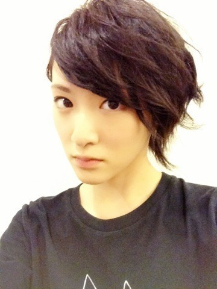

| 2013/08 31 Sat | 真夏の全国ツアー終わりました！ヽ(・ ∀・)ﾉ |
札幌、福岡、大阪、名古屋、東京と
私達乃木坂46は初めてのツアーを回りました。
やってみると自分の欠点が沢山出てきてどうすれば良くなるのか？
どうすれば皆さんが楽しんでくれるのかみんな話し合って考えて来ました。
みなさんにどう伝わったか分からないけど、私はひとつひとつのステージを一生懸命自分の気持ちが伝わる様に楽しみながら立ちました。
このツアーでいろんな考え方とか、取り組み方が変わりました。
今まで通りじゃダメなんだ。
変わらないといけないのだと何回も思いました。
自信を持つのが不安で、自分がその場に立って動いてよいのか？
ずーっと思って来たけどもうなくなりました！
私は乃木坂46だから！
だからそのステージで自信をもって全力出さないとだめだよね。
みんなでひとつのグループだけど、ひとりひとりが輝かないと凄いグループになれないと個人的に思いました。
乃木坂ふぁむの皆さんがいるから乃木坂46は活動できます。
支えて下さってありがとうございます！
スタッフさん！
私達の為にステージのセットとかいろんな所で影から支えて下さってありがとうございます！
みんなでひとつ！
みんなで乃木坂46！
人それぞれ考え方、捉え方違うけど。
だけど同じ場所にいる時ぐらいいいじゃない！
みんな仲間だー！ヽ(・∀・)ﾉ
と思ったツアーでした。
次は代々木が決まりました。
私達の実力では正直足りない所がありすぎると思いますが、この経験から次につなげる為に全力で取り組みたいと思います！
二期生もプラスでパワーUPしてゆくよっ！
うおー！燃えてるぜー！

最終日の髪型！
ちょいイケメン風にしてもらいました！
あと！
NARUTO疾風伝のOP曲を十月から乃木坂46が歌います！ヽ(・∀・)ﾉ
生駒
本当に大好きなんです。
すごくすごく大好きな作品。
乃木坂として取り組みますが、やはりNARUTOファンですので興奮を抑え切れません！
命をかけて取り組みます！
私は幸せ者です！
NARUTOを壊さない！絶対！
あと！
ジャンプLIVEにてコーナーを今回やらせて頂きました！
みなさん！是非ジャンプLIVEをインストールして生駒の熱く語っている様子をたっぷりご覧ください！
うん！
とにかく！
冷静に何事にも一生懸命頑張るぞー！

へばなっ！
コメント(608)
2013/08/31 20:06